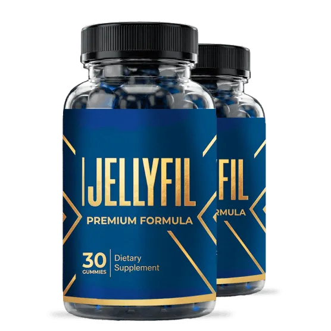

JellyFil™ – 30-Day Supply, Daily Male Vitality & Energy Support.
JellyFil is a male enhancement supplement created for adults in the USA who want extra support for their daily energy, stamina, and overall vitality. Modern lifestyles, long work hours, stress, and aging can affect how men feel throughout the day. JellyFil is made to fit easily into a daily routine and may help support physical performance, endurance, and confidence when combined with healthy habits. Many men choose a male wellness supplement like JellyFil to help maintain an active lifestyle and stay focused on their everyday goals.
JellyFil supports men's wellness by helping promote consistent energy, healthy circulation, and daily performance. It is suitable for men looking for a simple way to support their vitality without making major changes to their routine. Along with regular exercise, balanced nutrition, and enough sleep, JellyFil USA can become part of a healthy lifestyle focused on long-term wellness. Whether your goal is better stamina, improved endurance, or reliable daily support, JellyFil offers a convenient option for men seeking a men's vitality supplement, men's energy supplement, and stamina support to help them feel their best each day.
| Detail | Value |
|---|---|
| Supply Per Bottle | 30 days |
| Supplement Type | Men's wellness supplement |
| Primary Support | Energy, stamina, and vitality |
| Performance Support | Daily endurance and physical performance |
| Suitable For | Adult men |
| Lifestyle Support | Daily men's wellness routine |
Take JellyFil exactly as instructed on the product label. Following the recommended daily serving consistently can help support a regular men's wellness routine. Many users find it helpful to take the supplement at the same time every day to maintain consistency. Do not take more than the suggested serving unless advised by a qualified healthcare professional.
For the best experience, combine JellyFil USA with a balanced diet, regular physical activity, proper hydration, and quality sleep. Healthy lifestyle habits work together to support daily energy, stamina, endurance, healthy circulation, and overall male vitality. Individual experiences may differ based on age, activity level, and consistency of use.
JellyFil is intended for healthy adult men and should be used only according to the instructions provided on the product packaging. Read all directions before use and avoid exceeding the recommended daily serving. If you experience any unexpected discomfort or unusual reaction, discontinue use and consult a qualified healthcare professional.
If you have an existing medical condition, use prescription medications, or are under medical supervision, speak with your healthcare provider before adding JellyFil to your daily routine. This men's wellness supplement is not intended for individuals under 18 years of age. Consistent use together with healthy daily habits can help support long-term men's vitality, endurance, and overall wellness.
According to the official product information, JellyFil USA includes a 60-day money-back guarantee for eligible purchases. This gives customers time to evaluate the product as part of their daily men's wellness routine.
What is JellyFil?
JellyFil is a men's wellness supplement created to support daily energy, stamina, vitality, and healthy circulation for adult men in the USA. It combines amino acids, botanical extracts, vitamins, and minerals that fit into a regular wellness routine. When paired with balanced nutrition, exercise, and healthy lifestyle habits, JellyFil may help support everyday performance and overall men's wellness.
How does JellyFil work?
JellyFil works by providing nutrients that support normal energy production, healthy blood circulation, and physical endurance. Its blend of amino acids, botanicals, vitamins, and minerals helps maintain daily vitality while supporting an active lifestyle. Consistent use, together with healthy eating, regular exercise, and proper sleep, can help promote overall men's health and everyday wellness.
Who can use JellyFil?
JellyFil is intended for healthy adult men in the USA who want extra support for energy, stamina, endurance, and overall vitality. It is suitable for men looking to maintain an active lifestyle through a daily men's wellness supplement. Individuals with medical conditions or those taking medications should consult a healthcare professional before use.
How should I take JellyFil?
Take JellyFil exactly as instructed on the product label using the recommended daily serving. Many users choose to take it at the same time every day to build a consistent routine. For the best results, combine JellyFil with regular exercise, a balanced diet, quality sleep, and proper hydration. Do not exceed the suggested daily serving.
What are the main benefits of JellyFil?
JellyFil is made to support daily energy, stamina, male vitality, healthy circulation, endurance, and overall men's wellness. It also helps complement an active lifestyle and healthy daily habits. Individual experiences may vary, but consistent use as part of a balanced routine may help support long-term wellness and physical performance.
Can JellyFil be taken every day?
Yes. JellyFil is intended for daily use when taken according to the directions on the product label. Regular use helps maintain a consistent wellness routine and supports ongoing nutritional intake. Pairing the supplement with healthy eating, exercise, and enough rest can help maximize its role in supporting daily energy and men's vitality.
How long does one bottle of JellyFil last?
One bottle of JellyFil provides a 30-day supply when used according to the recommended serving size. Taking the supplement consistently every day helps maintain a regular wellness routine. Individual experiences may differ depending on personal lifestyle, age, activity level, and overall health habits.
Does JellyFil support an active lifestyle?
Yes. JellyFil is intended to support men who want to maintain an active lifestyle by helping promote daily energy, stamina, endurance, and physical performance. Combined with regular exercise, nutritious meals, and healthy habits, this men's vitality supplement can become part of a complete daily wellness routine for adult men.
Is JellyFil suitable for men of all ages?
JellyFil is intended for healthy adults aged 18 years and older. It is not recommended for children or teenagers. Older adults and men with existing medical conditions should speak with a qualified healthcare professional before adding JellyFil to their daily men's wellness routine to ensure it is appropriate for their individual needs.
Where can I buy JellyFil in the USA?
Customers in the USA should purchase JellyFil from the official website or trusted authorized sellers to help ensure they receive the genuine product. Before ordering, review the latest product details, usage instructions, pricing, shipping information, and current purchase terms available through the official source.